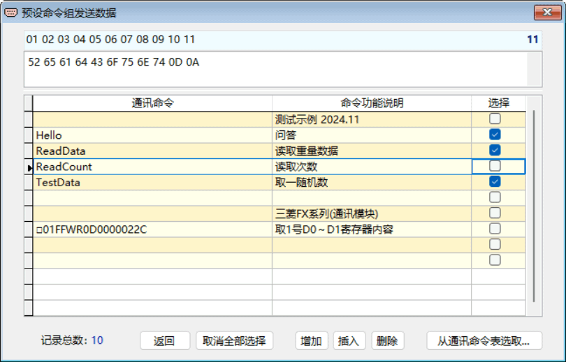

命令组的发送
RS232 Tool 除了 通常的一次发送一条通讯命令即单命令模式外，还能选择一次性发送一组通讯命令，即命令组模式。
在没有勾选主界面中的“□命令组”选项时，为单命令模式，点击【发送】是从指定串口发送出去一条发送区中的通讯命令字符串数据；勾选该选项后，切换为命令组模式，点击【发送】是从指定串口依次按周期间隔发送一组预设的各条通讯命令，而不是在发送区中的通讯命令。
在勾选“□命令组”选项后点击【 发送】之前，应预先设定好命令组的各条通讯命令，可通过点击工具栏上的“预设命令组发送数据 ”图标进行操作，点击后将打开下图所示窗口。
示例 ：
勾选通讯命令“Hello”、“ReadData”、“TestData”，生成命令组，返回后点击【发送】 ，将按“周期”间隔时间从串口逐一分别发送出去该 3 条命令。
窗口中表格的每一行记录， 包括一条通讯命令字符串数据及其说明，可以直接进行修改、输入或粘贴等操作，在表格中点击鼠标右键可弹出快捷菜单操作。
在窗口上部的十六进制编辑区中，固定以十六进制显示表中当前行的通讯命令字串内容，可直接对编辑区中的该条命令进行编辑、修改。对于那些不能在表格中显示与输入的特殊ASCII码字符，即可在此编辑处理。输入或修改内容后，可按回车健结束。
十六进制编辑区上方的数字标尺，便于准确定位编辑区中通讯命令字符串各字符的位置。
发送命令组的一般步骤
1. 点击工具栏上“预设命令组发送数据”图标，选择所需通讯命令（最多勾选8条），若无所需则先编辑命令再做选择，命令也可以从通讯命令表中选取，之后返回主界面；
2. 选择相应串口并设定其通讯协议；
3. 勾选“□ 命令组”选项；
4. 将“周期”设置为适当的时间间隔或保持不变；
5. 点击【打开串口】；
6. 点击【发送】，即从串口一次性发送出去所选命令组的各条命令。
